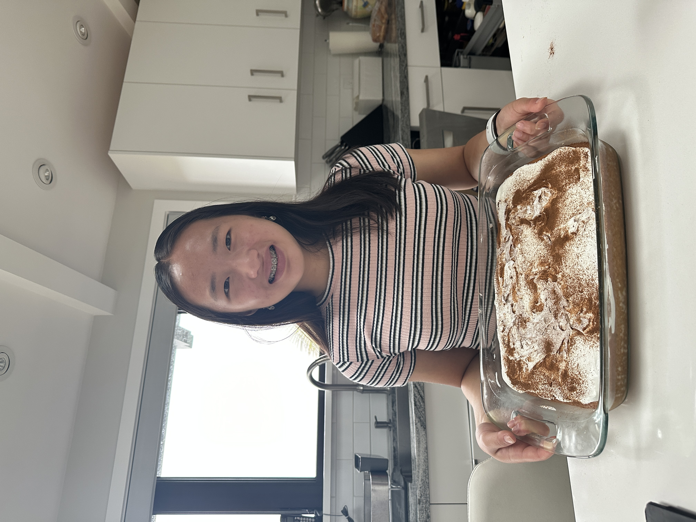

During Spring Break, my family and I took a cruise to Vancouver, Canada. We went to the Capilano Suspension Bridge Park and walked across the longest suspension bridge in the world. I love traveling because it exposes me to different cultures, traditions, and heritages that I may not be familiar with. Even though the Bay Bridge is a melting pot of diversity, there is still so much in the world that I have not learned about.
I made Tres Leches Cake, which is a type of cake from several Spanish-speaking countries, including Mexico. Baking is important to me because it is fun and relaxing. Additionally, one can work with various ingrdients to create a delicious dish. This exposes bakers to chemical experiments alonng the way. I have been baking since I was very young and have thoroughly enjoyed making various cakes, pastries, cookies, and breads.